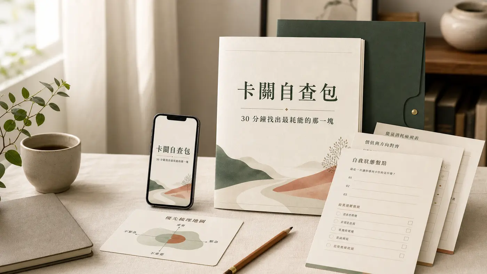

Kelly's action workpacks
生活卡住了，
就從一小步
開始解開
一份陪你整理自己的卡關，一份陪家人把活動放進每天。挑選現在最需要的工具，照自己的節奏往前走。
KELLY’S SMALL STEPS 01 / 02
今日啟動
今天一起動
舒緩伸展每天一點點 · 3 分鐘 第 1 段完成
今天先抽一張籤，
把小小進步留給家人。
把小小進步留給家人。
一點點，也很好。
A note from Kelly
不用一次把整個生活改好。先選一件今天做得到的事。
一份工具，一個起點
自查包幫你把腦中的模糊感整理成可觀察的問題；一起動把「全家要運動」變成每天抽一張、做一小段的共同節奏。兩款產品可各自購買使用。
How to start
選一份，今天就開始。
01 / 看內容
先看產品頁
了解適用對象、內容和需要準備的工具。
02 / 到店舖
確認付款與交付
兩款都是購買後下載 ZIP、依說明自行安裝的工作包。卡關自查包可由產品頁直接前往結帳；一起動請先至 Portaly 店舖查看上架資訊。
03 / 照步驟使用
從自己的節奏開始
拿到工作包後依說明操作，一起動可由買家自行建立家庭專屬網址。